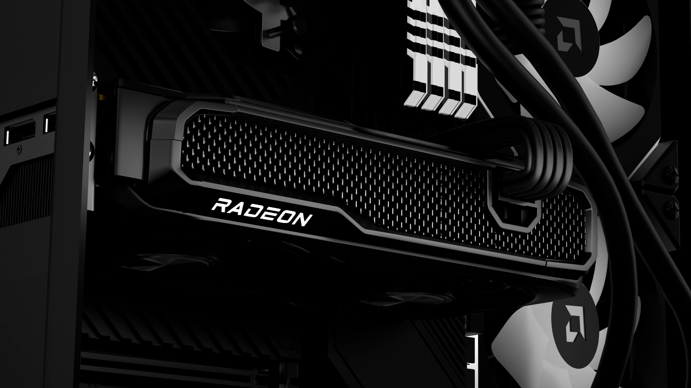

Un día después del lanzamiento de la RTX 5060, AMD aprovechó Computex 2026 para anunciar su respuesta directa: la Radeon RX 9060 XT. La nueva GPU llega al mercado el 5 de junio con dos variantes de VRAM — 8GB a USD 299 y 16GB a USD 349 — y según AMD, ofrece hasta un 15% mejor relación rendimiento/precio que la RTX 5060 Ti 8GB de NVIDIA.
Lo que importa: las especificaciones
La RX 9060 XT usa el nuevo silicio Navi 44 (RDNA 4, proceso TSMC N4P de 4nm). Tiene 32 Compute Units (equivalente a 2.048 stream processors), un reloj boost de 3.130 MHz — más alto que la propia RX 9070 — y memoria GDDR6 a 20 Gbps con bus de 128 bits.
El TDP es de 150W para la versión 8GB y 160W para la 16GB. Ambas usan un único conector de alimentación de 8 pines. Para comparar: la RX 7600 XT anterior consumía 190W. Más rendimiento, menos consumo.
Una diferencia técnica importante respecto a las RTX de NVIDIA: la RX 9060 XT usa interfaz PCIe 5.0 x16 completa. Esto importa porque la RTX 5060 Ti 8GB perdía hasta un 10% de rendimiento cuando se instalaba en placas con PCIe 4.0. AMD evitó ese problema de raíz.
Las dos variantes de VRAM: cuál conviene
El modelo de 8GB a USD 299 compite directamente contra la RTX 5060 al mismo precio. Según los números de AMD (y tomando en cuenta que AMD fue selectivo con qué juegos mostrar), la versión 16GB es hasta 6% más rápida que la RTX 5060 Ti 8GB en 40 títulos a 1440p en Ultra.
La recomendación obvia: salvo que el presupuesto sea ajustado, el modelo de 16GB a USD 349 es el que tiene sentido comprar. A ese precio, ofrecés el doble de VRAM que la RTX 5060 por USD 50 más. Las reviews independientes van a determinar cuánto de esa ventaja es real en la práctica, pero la propuesta sobre el papel es fuerte.
FSR 4 y lo que viene
Como toda la línea RDNA 4, la RX 9060 XT tiene soporte para FSR 4 (FidelityFX Super Resolution 4), que usa machine learning para mejorar la calidad de imagen al upscalear. Al momento del lanzamiento habrá soporte en más de 60 juegos. AMD también anunció FSR Redstone para la segunda mitad de 2026, que va a sumar neural radiance caching y frame generation por ML — la respuesta directa al DLSS 4 de NVIDIA.
¿Cuándo y quién la vende?
La RX 9060 XT sale el 5 de junio. No hay modelos de referencia propios de AMD, pero sí habrá modelos a precio de lista (o cerca) de Asus, Sapphire, PowerColor, ASRock, Gigabyte y XFX. En Argentina la disponibilidad va a depender de los canales habituales de importación.
Las reviews independientes empiezan en la misma fecha. Es ahí donde vamos a ver si los números de AMD se sostienen contra pruebas reales — y si la RTX 5060 realmente tiene por qué preocuparse en el mercado de los USD 300.